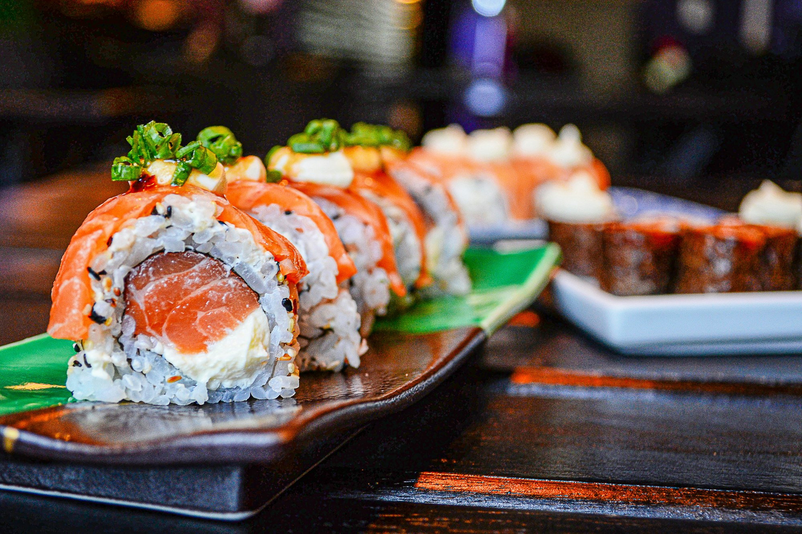

Nasi, bami, babi pangang, foe yong hai, saté en pisang goreng

Japans, Thais, Westers en Chinees in de Reeshof, Tilburg
Royal Palace
Verse sushi, sashimi, teppan yaki en nog veel meer, onbeperkt van de kaart. Of eet a la carte en haal af. Smaak is onze passie: laat u door ons verrassen.
All you can eat
Bij Royal Palace geniet u van heerlijk verse sushi en van gerechten uit de Japanse, Thaise, Indische, Chinese en westerse keuken. Sushi, sashimi, teppan yaki, frituurgerechten, rijst, noodles, soepen, salades, desserts en nog veel meer. Ook voor vegetariërs is er genoeg keuze.
De sfeervolle inrichting en vriendelijke bediening zorgen voor een gezellige avond met lekker eten. Liever a la carte eten? Dat kan ook. En er zijn voldoende gratis parkeerplaatsen.
"Elk gerecht heeft een eigen verhaal, wij vertellen u graag de bijzonderheden."
Onbeperkt dineren, excl. drinken
Maandag t/m donderdag€ 36,90per persoon
Vrijdag t/m zondag en speciale dagen*€ 39,90per persoon
Kinderen 3 t/m 5 jaar€ 12,50
Kinderen 6 t/m 10 jaar€ 2,50 per levensjaar
Of bel 013 570 44 45
All you can eat & drink
Wilt u volledig zorgeloos dineren? Voor een meerprijs van € 10,50 per persoon geniet u 2 uur lang onbeperkt van frisdrank, tapbier, huiswijnen, koffie en thee. Voor 2,5 uur betaalt u € 13,50 per persoon extra. Voor kinderen van 3 t/m 5 jaar is de toeslag € 5,-, voor kinderen van 6 t/m 10 jaar € 8,50.
*Speciale dagen
Nieuwjaarsdag, Valentijnsdag, Goede Vrijdag, 1e en 2e Paasdag, Koningsdag, Bevrijdingsdag, Moederdag, Hemelvaartsdag, 1e en 2e Pinksterdag, Vaderdag, Sinterklaas en Oudejaarsdag.
Menukaart
Van sushi tot teppanyaki en tempura. Kies hieronder de kaart voor het restaurant of voor afhalen.
Alles op deze kaart is onbeperkt bij all you can eat. Alleen de side orders hebben een kleine toeslag per bestelling.
Bestel online via onze bestelsite of bel 013 570 44 45. Prijzen in euro's.
Afhaalprijslijst 2026-2027. Indien gewenst in plaats van witte rijst: bami of nasi € 2,20 extra, mihoen of Chinese bami € 4,00 extra. Prijswijzigingen voorbehouden.
Heeft u een allergie? Meld het ons!
Afhalen of thuisbezorgen
Kies uit het menu, reken af met iDEAL en uw bestelling staat voor u klaar. Bestellen kan ook telefonisch.
Sushi mix
Catering
Een speciale gelegenheid, een evenement of gewoon een lekkere maaltijd voor dagelijks gebruik? Kies uit onze buffetopties of stel zelf een menu samen: van traditionele Chinese gerechten tot verse sushi. Catering is mogelijk vanaf 15 personen, de gerechten kunnen worden aangeleverd in au bain-marie schalen.
Chinees buffet
Nasi, bami, mihoen, babi pangang, foe yong hai, saté, koe lo yuk, tjap tjoy met kipfilet en mini loempia
Nasi, bami, mihoen, babi pangang, foe yong hai, kip en zwarte bonensaus, saté, mini loempia's, pangsit goreng, tjap tjoy met kip, pisang goreng en koe lo yuk
Nasi, bami, mihoen, gebakken krab, mini loempia, pangsit goreng, tongfilet met verse vruchtensaus, ossenhaas met zwarte bonensaus, tja siuw, babi pangang, kipfilet met seizoensgroenten, speciaal gekruide varkenshaas met Chinese groenten
Specialiteitenbuffet
Natuurlijk brengen wij in overleg graag een specialiteitenbuffet voor uw speciale gelegenheid. De rijke traditie van de oosterse keuken en vernieuwend durven koken zorgen voor een echte eetbelevenis voor u en uw gasten. Specialiteitenmenu's en -buffetten vanaf € 18,00 per persoon.
Sushi voor uw gasten
Iets speciaals voor uw speciale gelegenheid: verras uw gasten met sushi. Kies zelf uit de sushigerechten of laat ons een speciaal menu samenstellen.
Wensen afstemmen? Bel ons even.
013 570 44 45Ben jij jarig? Royal Palace trakteert!
Op vertoon van uw legitimatiebewijs krijgt u op de dag dat u jarig bent een gratis diner.
- Geldig bij een reservering van minimaal 4 volwassen gasten
- Maximaal één jarige per reservering
- Kinderen nemen ook een geldig legitimatiebewijs mee
- Dranken exclusief
- Niet te combineren met andere acties en niet geldig op feestdagen
- Geef bij het reserveren aan dat er een jarige bij is. Online kan dat in het opmerkingenveld.
Met een kleiner gezelschap
- 1 betalende volwassene
- 25% korting voor de jarige
- 2 betalende volwassenen
- 50% korting voor de jarige
- 3 betalende volwassenen
- de jarige eet gratis
Bezoek ons in de Reeshof
Adres
Huibevendreef 20
5043 EW Tilburg
Voldoende gratis parkeerplaatsen
Contact
Restaurant
| Maandag | 16:00 - 22:00 |
|---|---|
| Dinsdag | gesloten* |
| Woensdag | 16:00 - 22:00 |
| Donderdag | 16:00 - 22:00 |
| Vrijdag | 16:00 - 22:30 |
| Zaterdag | 16:00 - 22:30 |
| Zondag | 16:00 - 22:30 |
Afhalen
| Maandag | 13:00 - 22:00 |
|---|---|
| Dinsdag | gesloten* |
| Woensdag | 13:00 - 22:00 |
| Donderdag | 13:00 - 22:00 |
| Vrijdag | 13:00 - 22:30 |
| Zaterdag | 13:00 - 22:30 |
| Zondag | 13:00 - 22:30 |
*Behalve op feestdagen. Houd er rekening mee dat onze keuken een half uurtje eerder sluit.